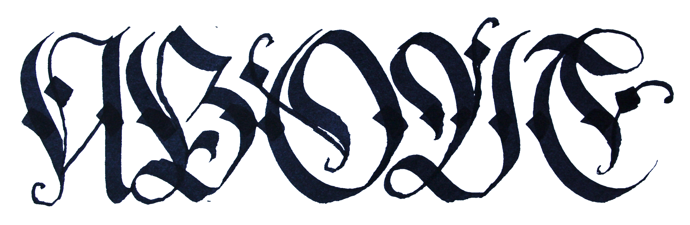

Andrea Gasparro, in arte Sorte, nasce il 24/06/1997 a Milano, inizia ad appassionarsi all'arte all'età di 11 anni, comprando le sue prime bombolette, ed iniziando a dipingere con esse. Pur studiando presso il liceo scientifico dedica parte del suo tempo libero nella produzione di arte, principalmente con l'utilizzo di bombolette spray, questa sua passione lo porta a iscriversi presso il Politecnico di Milano nella facolta di Design della Comunicazione.
Olte a svariati lavori su commissione, alla giovane età di 20 anni, viene chimato per esporre in un locale 8 sue opere, di cui 4 vendute la sera stessa. È stato chiamato inoltre dal comune di Milano per un'opera di riqualificazione urbana presso le mure perimetrali della scuola elementare di via Cima, nel quartiere di Ortica a Milano.